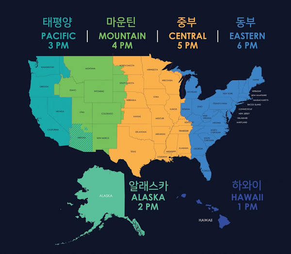

2018년 서머타임 Daylight Saving Time
시작일 : 2018년 03월 11일 (일요일)
종료일 : 2018년 11월 04일 (일요일)
미국의 서머타임은 연방법에 따라 매년 3월 둘째 일요일에 시작해 11월 첫째 일요일에 종료한다.
한국과 미국 동부 표준시(EST)의 차이는 14시간에서 13시간으로 줄어들며,
서부 표준시(PST)와의 시차도 17시간에서 16시간으로 1시간 축소된다.
뉴욕 증권시장도 1시간 당겨져
한국시간으로 밤 10시 30분에 개장하고 이튿날 새벽 5시에 장을 마감한다.
유럽은 오는 30일부터 시간 조정이 이뤄진다.
그 이후 한국과의 시차는 중부유럽표준시(CET) 기준으로 8시간에서 7시간으로 줄어든다.
CET는 독일, 프랑스, 이탈리아, 스페인, 네덜란드, 스위스, 폴란드 등 유럽 주요 국가에 적용된다.
유럽연합(EU)은 3월 마지막 주 일요일에 서머타임을 시작해 10월 마지막 일요일에 종료한다.
